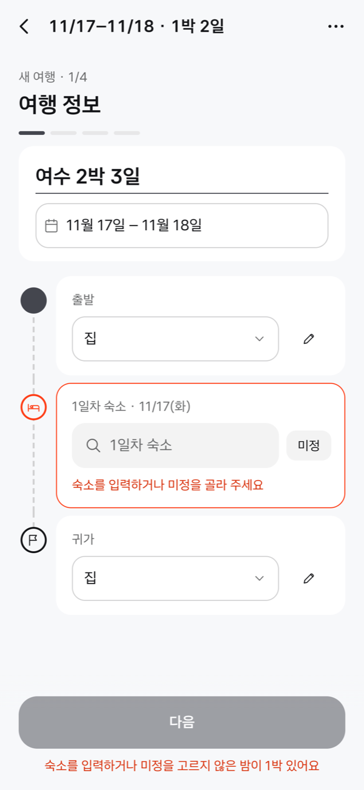
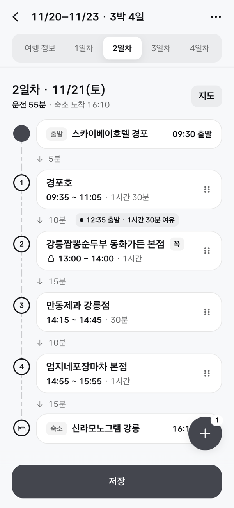
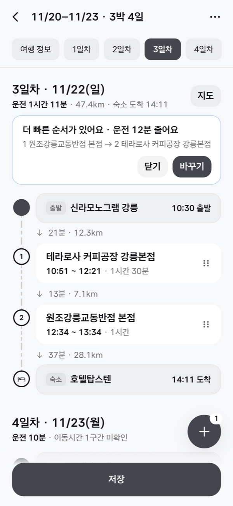
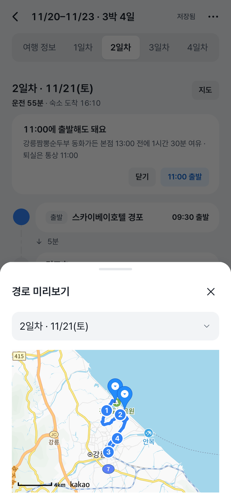
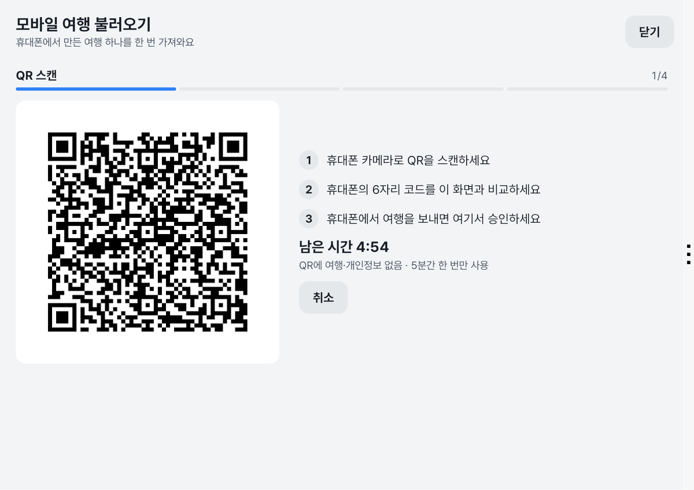
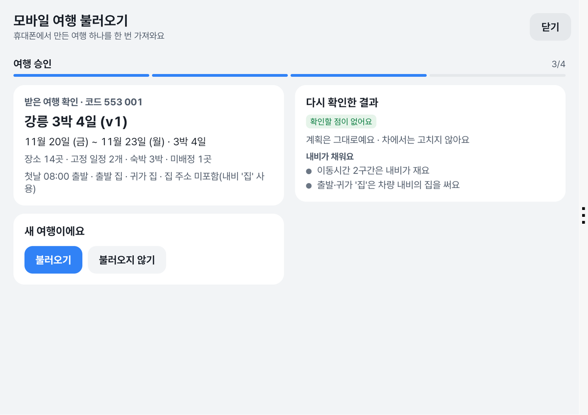
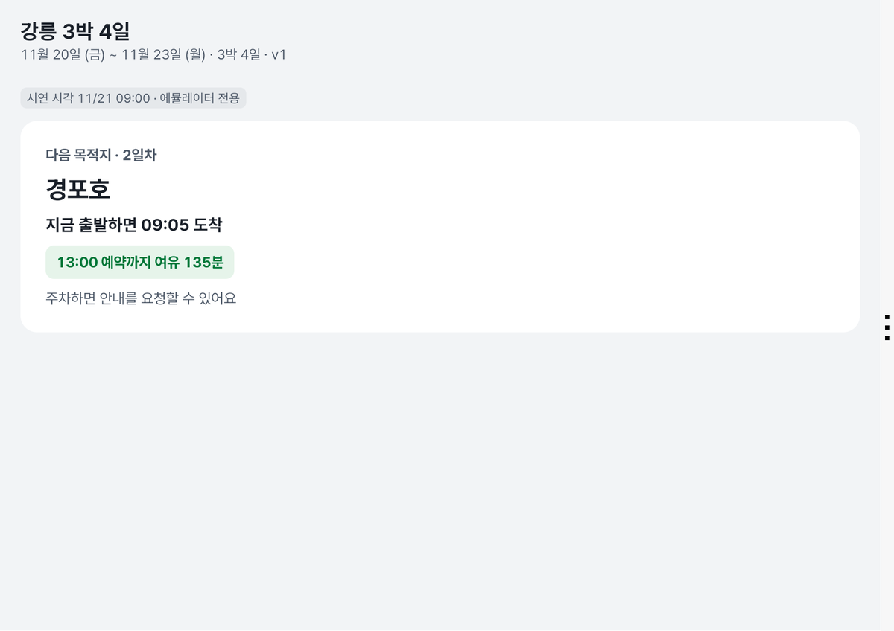

가고 싶은 곳만 담으면 날짜별 동선은 자동으로 — 그 여행을 차에 타서 QR 한 번으로 옮기면 현대차 내비가 순서대로 안내합니다.
장소를 날짜와 순서로 자동 배치하고 카카오 실제 운전 시간으로 채웁니다. 앱 설치도, 계정 가입도 없이 여행 하나를 한 번만 안전하게 옮기고, 차가 운전 맥락에서 다시 검사한 뒤, 차의 내비가 안내합니다.
기획 배경 — 왜 필요한가
가고 싶은 장소를 고르는 일은 어렵지 않습니다. 시간이 가장 많이 드는 일은 고른 장소를 날짜별로 나누고 효율적인 순서로 동선을 구체화하는 과정입니다. 이 일을 건너뛰면 동선이 비효율적으로 짜여 여행 시간의 대부분을 이동에 쓰게 됩니다. 떠날지도는 이 동선을 자동으로 짜는 데서 출발했습니다.
여러 날 여행은 예약 시각·숙소·귀가가 서로 얽혀 한 곳이 늦으면 뒤 일정이 함께 무너집니다. 그런데 여행 계획 앱은 장소를 직선으로 잇고 이동시간을 어림하게 두어 예약에 맞추려면 언제 떠나야 하는지 알려 주지 못하고, 내비게이션은 '지금 목적지'만 알고 '여행 전체'는 모릅니다.
동선을 다 짜도 차에 타면 내비에 목적지를 하나씩 다시 검색해야 하고, 기존의 화면 미러링·계정 연동 방식은 렌터카·공용 차량에서 쓰기 어렵고 집 주소 같은 개인정보가 차에 남을 걱정이 있습니다. 떠날지도는 짠 동선을 계정 없이 차로 옮겨 내비가 그대로 안내하게 합니다.
핵심 기능
1
날짜별 동선 자동 구성
장소만 담으면 [경로 추천]이 날짜에 나누고 이동이 짧은 순서로 정한 뒤 카카오 실제 운전 시간·거리를 채웁니다. 일차 지도도 실제 도로로 그립니다.
2
예약 15분 전 · 더 빠른 순서
예약 앞에 '12:35 출발 · 1시간 30분 여유'처럼 직전 장소에서 떠날 시각을 붙입니다. 운전이 10분 이상 줄면 더 빠른 순서를 제안합니다.
3
일회용 QR 불러오기
주차 중 차 화면에 QR을 띄웁니다(5분·1회). 휴대폰으로 스캔한 뒤 양쪽의 6자리 확인 코드를 맞추고, 보낼 여행을 골라 양쪽에서 승인합니다.
4
종단간 암호화
중계 서버도 여행 내용을 볼 수 없고, 전송이 끝나면 즉시 지웁니다. 계정·영구 연결이 없고, 집 주소는 동의할 때만 함께 보냅니다.
5
차량 재검증
고정 일정 지각·빠진 이동시간·숙소 연결·귀가·영업시간을 다시 확인합니다. '충돌·확인 필요'로 표시만 하고 계획은 바꾸지 않습니다.
6
현대차 내비 연동
버튼 한 번으로 다음 장소·숙소·귀가지를, 또는 다음 3곳을 한 번에 내비에 보냅니다. 내비 '집' 즐겨찾기로 집 주소 없이 귀가합니다.
7
여행 중 시간 지킴이
내비 남은 시간으로 하루를 다시 계산해 "예약까지 여유 66분"처럼 알리고, 늦으면 선택 일정을 건너뛰거나 미루자고 제안합니다. 도착하면 자동 체크.
8
주행 중 단순화 화면
차가 움직이면 '다음 목적지'와 상태 한 줄만 남기고 조작이 막힙니다(CarUxRestrictions). 주차하면 하던 일이 이어집니다.
이것만은 — 세 가지 원칙
개인정보는 최소한
계정이 없습니다. 여행은 '한 번만' 옮기고 전달이 끝나면 서버에서 즉시 삭제됩니다. 카카오에는 좌표만 보내고 저장·기록하지 않습니다.
계획은 사람이 정함
차와 휴대폰은 검사하고 제안할 뿐, 계획을 몰래 고치지 않습니다. 순서 바꾸기·건너뛰기는 누를 때만, 되돌릴 수 있게 반영됩니다.
차량이기에 가능한 경험
차량 화면 승인, 내비 실시간 정보·차량 신호와 일정의 결합, 운전 맥락 검사 — 휴대폰 앱만으로는 할 수 없는 경험입니다.
휴대폰 — 실제 도로 기준으로 여행 짜기

4단계 새 여행 안내여행 정보 → 장소 담기 → 예약·꼭 갈 곳 → 경로 추천

예약 15분 전 도착13:00 예약 앞에 '12:35 출발 · 1시간 30분 여유', 운전 시간은 굵게

더 빠른 순서카카오 실제 시간으로 확인해 운전이 10분 이상 줄 때만 제안(화면은 20분), [바꾸기]는 되돌리기 가능

실제 도로 경로정류지 사이를 직선이 아니라 길찾기가 실제로 가는 도로로 그립니다
배포 서버에서 카카오 실제 데이터로 찍은 화면입니다(샘플 '강릉 3박 4일', 3일차는 순서를 일부러 바꿔 둠). 화면은 Pleos 디자인 언어(회색 바탕·흰 컨테이너·그래파이트 버튼·Asta Sans)를 따릅니다.
작동 방식 — 여섯 단계
1
휴대폰에서 여행을 짜요
장소를 담고 예약 시각·숙소를 정하면 카카오 실제 운전 시간으로 하루 시각이 계산됩니다. 여행은 휴대폰 안에만 저장됩니다.
2
차 화면에 QR이 떠요
주차한 채 '불러오기'를 누르면 일회용 QR이 나옵니다(5분·1회). QR 자체엔 여행 내용도 개인정보도 없습니다.
3
스캔하고 숫자를 맞춰요
휴대폰 카메라나 앱 연결 탭으로 QR을 찍고 두 화면의 6자리 숫자가 같은지 봅니다. 엉뚱한 차·가로채기를 막는 단계입니다.
4
잠가서 보내요
고른 여행 하나만 암호화해 보냅니다. 중계 서버도 내용을 열 수 없고, 집 주소는 동의할 때만 함께 보냅니다.
5
차가 확인하고 불러와요
예약 지각·빠진 이동시간·문 여는 시간을 다시 점검합니다. 사람이 한 번 더 승인해야 들어오고 계획은 그대로입니다.
6
내비가 하루를 챙겨요
버튼 한 번으로 다음 장소를 안내합니다. 남은 시간으로 여유를 알리고, 늦으면 건너뛰기·미루기를 제안하며, 도착하면 자동 체크됩니다.
신뢰의 근거
교차 검증
휴대폰(TS)과 차량(Kotlin)이 같은 일정 데이터를 읽고 같은 판정을 내는지 fixture로 자동 비교합니다. 어느 한쪽만 바뀌면 시험이 실패합니다.
안전 우선
주행 규제(CarUxRestrictions) 코드 경로를 구현해 주행 중 조작을 막습니다. 내비·차량 신호 조회는 경로를 바꾸지 않는 읽기 전용 API만 사용.
최소 권한
차량 제어 권한을 선언하지 않습니다. 차량 신호는 조회 전용(에너지·주행·안전·문·좌석)만 쓰고, 원시 신호값은 저장하지 않습니다.
차량 — 불러오고, 확인하고, 안내받기

일회용 QR · 단계 1/4, 5분·1회, QR에는 여행·개인정보 없음

다시 확인한 결과 · 충돌 0 · 확인 필요 5, 계획은 그대로 · 차에서 한 번 더 승인
하루 동선 + 다음 목적지 · 휴대폰과 같은 동선, 다음 고정 일정까지 '13:00 예약까지 여유 135분'(늦으면 건너뛰기 제안), 출발 전 점검

주행 중 화면 · 다음 목적지·남은 거리·상태만, 버튼 없음
Pleos Connect Emulator 2.1.0에서 0.5.0 빌드로 찍은 화면입니다(앱 영역만 잘라 냄). 화면은 Pleos Connect 공식 디자인 명세(design/DESIGN.md)의 컴포넌트 — 머리말·세그먼트 컨트롤·기본/채움 버튼·스위치·시스템 팝업 — 와 토큰만으로 만들었고, 색은 상태 점에만 씁니다. 시연 시각은 에뮬레이터 전용 표시입니다.
기술 구조
차량 앱
Kotlin · Jetpack Compose (Android Automotive). Pleos Connect 2.1.5 공식 디자인 명세의 컴포넌트·토큰, NaviHelper 3.0.5, Vehicle SDK 2.3.2(조회 전용). 암호화 로컬 저장, 주·야간 지원. 권한은 INTERNET·NAVI_*와 읽기 전용 CAR_ENERGY·DRIVE·SAFETY·DOORS·SEATS만.
모바일 웹
React 19 · Vite, Pleos 디자인 토큰. 설치 없이 QR로 열리고 여행은 기기 안에만 저장. 카카오 장소 검색·길찾기·지도. 지도앱 공유 수신(PWA)·드래그 편집. 한국어·영어.
중계 서버
Cloudflare Worker + Durable Object. 세션 하나를 원자적으로(5분·1회) 처리. P-256 ECDH · HKDF · AES-256-GCM 종단간 암호화. 카카오 키는 서버에만 두고 좌표만 전달(저장·기록 없음).
확장 기능
여행을 더 똑똑하게 · 계획은 사람이
여행 중 — 운전 맥락에서 조정
건너뛰기 · 미루기
늦을 것 같으면 선택 일정을 건너뛰거나 오늘 나중으로 / 다른 날로 미룹니다. 모두 차량 오버레이에만 기록돼 계획은 바뀌지 않고 되돌릴 수 있습니다.
실제 주차 시간 추정 향후 계획
지금은 주차 시간을 계산에 넣지 않습니다. 앞으로 내비 안내 종료 뒤 시동 종료·안전벨트 해제·문 잠금이 모두 이뤄진 시각을 실제 도착으로 보고, 장소 종류별 주차 시간을 추정해 내비 도착 예상에 반영합니다.
EV·연료 충전/주유 추천 차량 신호
EV는 숙소까지 되면 야간 완속, 아니면 다음 정류장 급속(주행가능거리 vs 남은 거리). 내연기관은 잔량 20~30%에 주유 권장 — 유가·충전소는 순정 내비가 표시합니다.
내비 묶음 전송
다음 목적지 하나가 아니라 그날 경로를 한 번에 내비로 보냅니다(최대 3스톱). 주차 중 명시적 탭에서만 동작합니다.
계획 세우기 — 더 쉽게, 함께
지도앱 장소 공유 수집
네이버·카카오·구글 지도의 '공유'로 떠날지도에 보내면 그 장소가 여행에 들어갑니다(설치형 웹 공유 타깃). 링크만 와도 서버가 장소명을 읽어 카카오 검색으로 위치를 찾습니다.
경로 추천 · 실제 도로 지도
고정 일정은 그대로 두고 장소를 일차에 나누고 숙소 쪽으로 순서를 추천(미리보기 후 승인)한 뒤, 카카오 길찾기로 구간 시간·거리와 도로 경로를 채웁니다.
더 빠른 순서 · 드래그 편집
직선거리로 후보를 고른 뒤 카카오 실제 시간으로 확인해 운전이 10분 이상 줄고 예약에 늦지 않을 때만 제안합니다. 순서는 끌어서도 바꿉니다.
친구에게 공유
여행을 암호화 파일로 친구에게 보냅니다. 중계 서버를 거치지 않고(링크 없음), 집 주소는 빼고 6자리 패스코드로 엽니다.
모든 조정·추천은 '제안·표시'이며, 사용자가 누를 때만 반영되고 되돌릴 수 있습니다. 예약 15분 전 도착 기준은 휴대폰 화면에서 쓰며, 차량 시간 지킴이는 자체 기준(여유 10분)을 씁니다. 차량 신호(에너지)는 조회 전용 권한으로 읽어 추천에만 쓰고 저장·전송하지 않습니다.
진행 현황
기준일 2026-11-13 · 1차 마감 11-15
개발 마일스톤
단계
내용
상태
검증
M0–M5
전송 스키마·종단간 암호화(TS·Kotlin), Cloudflare 중계 서버, 모바일 웹 편집기, 차량 앱(재검증·QR·암호화 저장·주행 잠금), 내비 연동